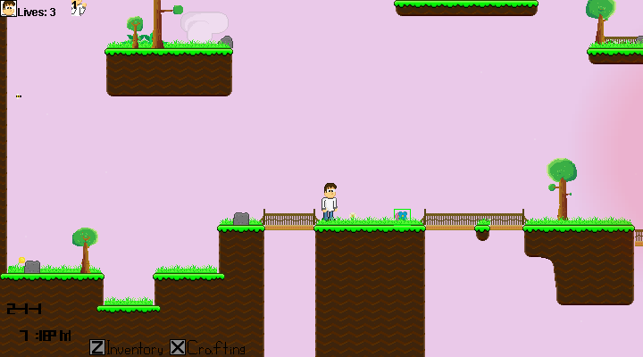

Arvopia 0.5!
#TeamTrees

Arvopia 0.5, the Foliage Update. As the name suggests, this update was intended for plant based updates. Made in just under a month, this update adds a little less than 0.4, but for the time it was in development, the content is comparable to that of Arvopia 0.4.

In the options menu, the Scale slider was removed and replaced with a Toggle Button for whether or not the game will pause itself when the mouse leaves the game window. In addition to a new option, the ability to save and load a world was added, allowing people to keep their progress.
Version 0.5
Arvopia 0.5, the Foliage Update. As the name suggests, this update was intended for plant based updates. Made in just under a month, this update adds a little less than 0.4, but for the time it was in development, the content is comparable to that of Arvopia 0.4.
Environmental changes were the main focus of this update and it definitely succeeded in that category. Trees were replaced from tiles into entities, that are able to grow and drop wood. Along with trees, long grass, ferns and dandilions were also introduced.